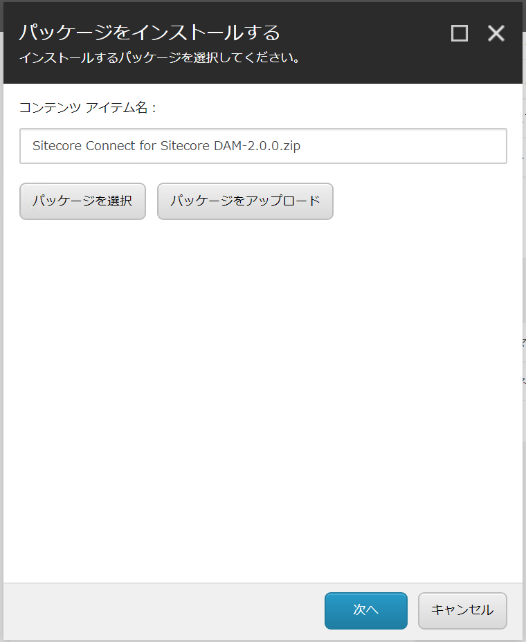
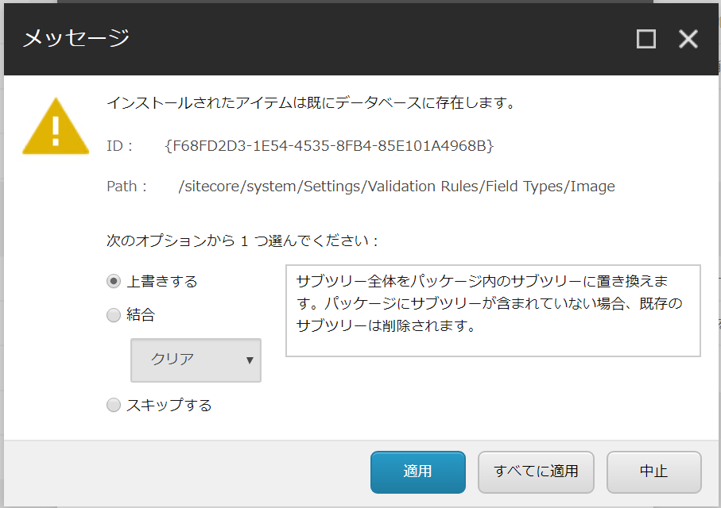
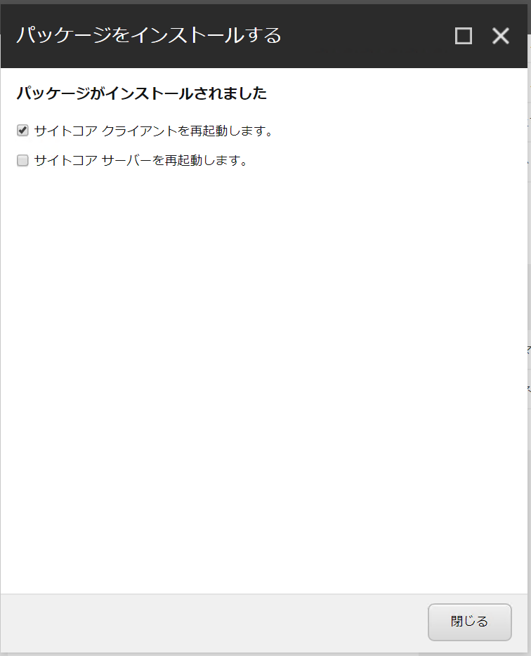

2.7. Sitecore Connect for Sitecore DAM¶
Sitecore Connect for Sitecore DAM 2.0.0 を利用することで、Sitecore の管理画面から直接 Content Hub で管理している画像を指定するようになります。ここではモジュールのインストールと動作検証まで紹介をします。
2.7.1. 必要システム¶
Sitecore Connect for Sitecore DAM 2.0.0 は以下のシステムで利用することができます。
Sitecore Experience Platform 9.2
Sitecore Experience Platform 9.1.0, 9.1.1
なお、Sitecore Experience Manager、 Sitecore Experience Commerce でも上記のバージョンであればご利用いただけます。
2.7.2. Sitecore Content Hub の設定¶
まず最初に、Sitecore Experience Platform と Sitecore Content Hub の接続ができるように、設定を Sitecore Content Hub に追加していきます。
管理者の権限を持っているアカウントで Sitecore Content Hub にアクセスをして、「管理」―「設定」を開きます。
左側のメニューの`PortalConfiguratoin` をクリックします
CORSConfiguration をクリックして設定画面を開きます
管理サーバーの URL を入力して保存をクリックします
{kind=link}
続いてログイン方法に関して、今回はシングルサインオン以外でログインをするために、ログインの設定を変更します。
管理者の権限を持っているアカウントで Sitecore Content Hub にアクセスをして、「管理」―「設定」を開きます。
左側のメニューの`Authentication` をクリックします
設定の表示を Tree から Text に変更します。
ログインの設定で提供されている項目から、authentication_mode を “Passive” に変更します。また ExternalRedirectKeys を追加してください。追加した結果は以下のようになります。
{
"Providers": [
{
"$type": "Stylelabs.M.Portal.Authentication.SamlAuthenticationProviderConfigurator, Stylelabs.M.Portal",
"metadata_location": "---------------------",
"sp_entity_id": "---------------------",
"idp_entity_id": "-------------------------",
"provider_name": "SSO",
"authentication_mode": "Passive",
"module_path": "AuthServices",
"is_enabled": true
}
],
"ExternalRedirectKeys": {
"Sitecore": "https://92sc.dev.local/"
}
}
変更しているのは2か所です、確認をして保存します。
2.7.3. Sitecore Experience Platform の設定¶
モジュールのダウンロード
続いて Sitecore の設定を開始します。まず、以下のページからモジュールのダウンロードをします。
この解説では Sitecore Connect for Sitecore DAM をダウンロードしてインストールを進めます。
2.7.3.1. モジュールのインストール¶
モジュールのインストールは、「コントロールパネル」－「パッケージをインストールする」を開いてください。
{kind=link}
次へ、をクリックすると以下のような警告が出ます。
{kind=link}
上書きを選択した後、全てに適用をクリックしてください。しばらくすると、インストールが完了します。
{kind=link}
続いて以下の手続きを実行します。
2.7.3.2. 日本語リソースの追加¶
日本語リソースは標準で入っていないため、以下から 20-damtoolbar-ja-jp.xml をダウンロードしてください。
このリソースは、 Core データベースに追加することで、日本語の表記を修正する形となります。
{kind=link}
{kind=link}
2.7.4. 動作確認¶
リッチテキストエディタを利用して、Sitecore Content Hub にアクセスできるか確認をします。
インストールすると標準で用意されている /sitecore/content/Home のアイテムをコンテンツエディタで選択します。
エディターで表示する をクリックします
{kind=link}
リッチテキストエディタにボタンが増えていることを確認します（左から５つめ）
{kind=link}
ボタンをクリックします。ログイン画面が表示された場合は、Sitecore Content Hub のアカウントでログインをしてください。
DAM に登録されているアセットが表示されます。
{kind=link}
公開リンクのついているアイテムを選択します
{kind=link}
利用するアセットを選択すると、挿入された画面を確認することができます。
{kind=link}
OK を押して保存をして、画像のリンクが有効になっていれば、動作検証が完了となります。